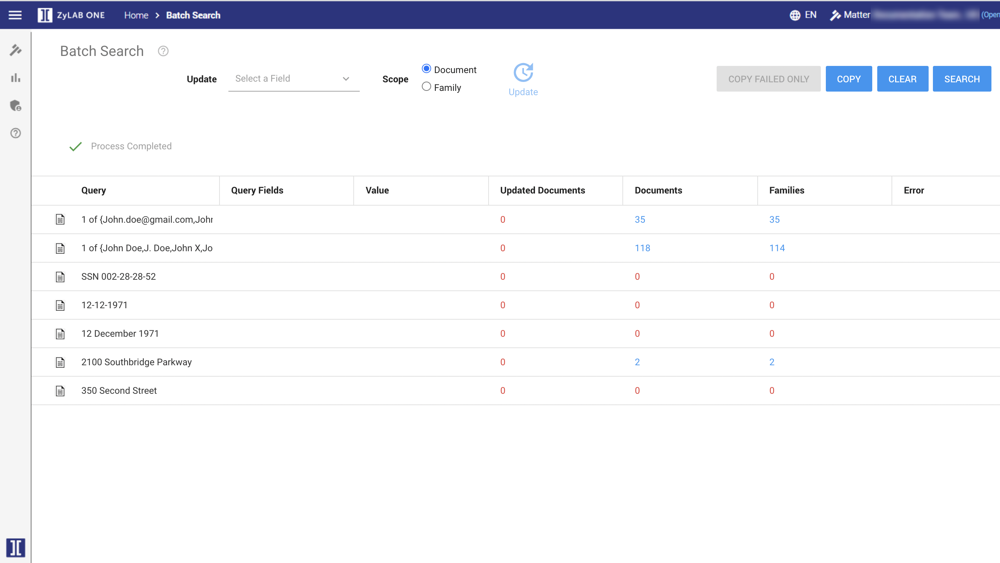

Values assigned to queries in your data sheet will be listed in the Value column.
 to view the search results of each query.
to view the search results of each query.

 if you want to copy all information (queries, values, search results, etc.). You can paste this information in a new data sheet.
if you want to copy all information (queries, values, search results, etc.). You can paste this information in a new data sheet.
 to remove all queries from ZyLAB One and start over again.
to remove all queries from ZyLAB One and start over again.